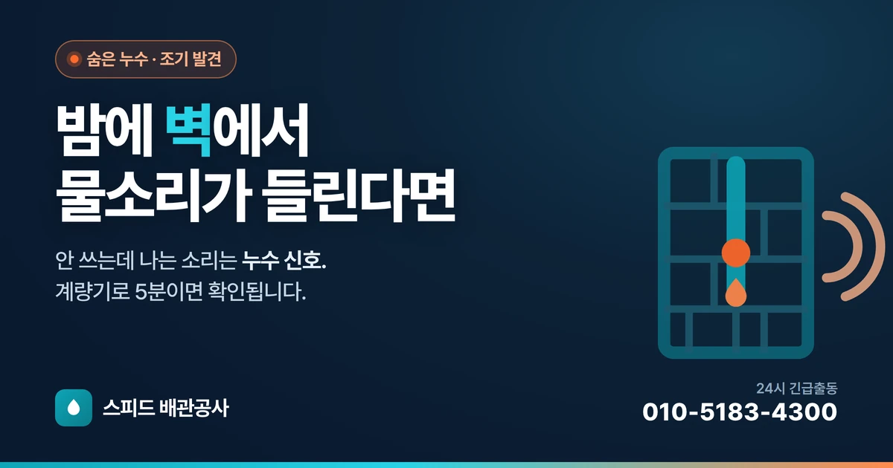

누수밤에 벽에서 물소리가 들릴 때 — 안 보이는 누수 찾는 법
아무도 물을 안 쓰는데 벽·바닥에서 물소리가 나면 어딘가 계속 새고 있다는 신호입니다. 계량기로 진짜 누수인지 5분 확인하는 법과 위치 좁히는 단서를 정리했습니다.
자세히 보기 누수변기 밑에서 물이 새고 냄새가 날 때 — 바닥 개스킷 문제
변기 바닥 틈에서 물이 비치고 하수 냄새가 계속 난다면 탱크가 아니라 변기 밑 개스킷 밀봉이 샙니다. 실리콘만 다시 쏘면 안 되는 이유와 자가 확인법을 정리했습니다.
자세히 보기 막힘
막힘배수구에서 '꾸르륵' 소리가 날 때 — 통기·봉수 문제 진단법
물 빠질 때 나는 꾸르륵 소리는 관 속 공기 흐름 문제 신호입니다. 소리로 원인을 좁히는 법, 완전히 막히기 전 집에서 먼저 해볼 것을 정리했습니다.
자세히 보기 설비
설비샤워기 물줄기가 약하고 갈라질 때 — 수압 아닌 석회질, 셀프 청소법
특정 샤워기만 물이 약하면 수압이 아니라 헤드·필터에 낀 석회질 때문입니다. 원인 가려내는 법과 부품 교체 없이 물줄기 살리는 청소 순서를 정리했습니다.
자세히 보기 누수
누수벽·바닥이 젖는데 누수인지 결로인지 헷갈릴 때 — 구분법
결로를 누수로 오인해 멀쩡한 배관을 뜯는 경우가 많습니다. 젖는 시간·모양·물 사용 연관으로 집에서 방향을 잡는 구분법과 원인별 대처를 정리했습니다.
자세히 보기 막힘
막힘싱크대가 자꾸 막히는 진짜 이유 — 기름때, 이렇게 관리하세요
주방 막힘의 진짜 원인은 음식물이 아니라 관 안쪽에 굳는 기름입니다. 뜨거운 물이 오히려 문제인 이유, 기름 버리는 법, 다시 안 막히게 하는 습관을 정리했습니다.
자세히 보기 누수세탁기 급수 호스, 터지기 전에 바꾸세요 — 침수 사고 막는 점검법
외출 중 집이 잠기는 사고의 흔한 원인이 세탁기 급수 호스입니다. 24시간 수압을 받는 이 호스의 위험 신호, 교체 주기, 침수를 막는 습관을 정리했습니다.
자세히 보기 설비
설비며칠 집 비울 때, 수도 이렇게 하고 가세요 — 부재 중 배관 체크리스트
누수 사고는 방치 시간이 피해를 정합니다. 여행·출장 등 장기 부재 전 수도 잠그는 법, 돌아왔을 때 나는 하수구 냄새(봉수 마름)와 겨울 동파 대비를 정리했습니다.
자세히 보기 누수
누수아랫집에서 누수 연락이 왔을 때 — 책임 확인과 대처 순서
천장 누수라고 무조건 윗집 책임은 아닙니다. 그 자리에서 인정하면 안 되는 이유, 원인 규명·보험·복구까지 손해 안 보는 순서를 정리했습니다.
자세히 보기 막힘
막힘화장실에 작은 날벌레가 계속 생길 때 — 하수구 나방파리 없애는 법
화장실 벽에 붙는 작은 벌레는 초파리가 아니라 하수구에서 번식하는 나방파리입니다. 약을 뿌려도 안 없어지는 이유와 근본 청소법을 정리했습니다.
자세히 보기 설비세면대 아래에서 물이 샐 때 — P트랩 누수 직접 잡는 법
세면대 밑 누수는 대부분 벽 속이 아니라 P트랩 연결부에서 샙니다. 새는 지점 찾는 법과 부품 교체 없이 직접 잡는 순서를 정리했습니다.
자세히 보기 긴급물이 터졌을 때 1분 안에 잠그는 법 — 우리 집 수도 차단밸브 위치·사용법
배관이 터지면 피해 크기는 '얼마나 빨리 물을 잠갔는지'로 갈립니다. 세대 메인 밸브 위치와 잠그는 법, 밸브 고착 점검, 사고 순간 대처 순서를 정리했습니다.
자세히 보기 막힘변기 막힘, 집에서 뚫는 법과 절대 하면 안 되는 것
변기가 막혔을 때 집에서 안전하게 뚫는 순서와, 오히려 상황을 악화시키는 금지 행동을 정리했습니다.
자세히 보기 막힘하수구에서 냄새가 올라올 때 — 원인 5가지와 해결법
화장실·싱크대 하수구 냄새의 원인 5가지와 집에서 할 수 있는 해결법, 전문가가 필요한 경우를 정리했습니다.
자세히 보기 누수수도요금이 갑자기 많이 나올 때 — 누수 자가진단 체크리스트
수도요금이 평소의 2배 이상 나왔다면 누수를 의심해야 합니다. 집에서 할 수 있는 누수 자가진단 방법을 정리했습니다.
자세히 보기 설비겨울철 배관 동파 예방법과 얼었을 때 안전하게 녹이는 법
한파에 수도·계량기가 얼지 않도록 예방하는 법과, 이미 얼었을 때 안전하게 녹이는 방법을 정리했습니다.
자세히 보기 막힘싱크대 하수구 막힘 — 원인별로 뚫는 법
싱크대 물이 안 내려갈 때 원인별 해결법과, 재발을 막는 관리 습관을 정리했습니다.
자세히 보기 막힘세면대·욕실 배수구 막힘 셀프 해결법
머리카락·비누때로 막힌 세면대와 욕실 배수구를 집에서 뚫는 방법과 예방법입니다.
자세히 보기 교체변기 물이 계속 조금씩 흐를 때 — 원인과 부속 교체
변기 물탱크에서 물이 계속 새면 수도요금이 조용히 늘어납니다. 원인이 되는 부속과 집에서 확인·교체하는 법을 정리했습니다.
자세히 보기 교체수도꼭지에서 물이 샐 때 — 원인과 셀프 점검
수전 손잡이 아래나 연결부에서 물이 새는 원인과, 집에서 확인할 수 있는 부분을 정리했습니다.
자세히 보기 비용누수·하수구 수리 비용은 무엇으로 정해질까
누수탐지·하수구 뚫음·배관공사 비용이 달라지는 요인과, 바가지 없이 견적받는 법을 정리했습니다.
자세히 보기 막힘세탁기 배수가 안 되거나 역류할 때
세탁 중 물이 안 빠지거나 배수구가 역류할 때 원인과 집에서 점검할 부분을 정리했습니다.
자세히 보기 누수아랫집 천장 누수(층간 누수) — 원인과 슬기로운 대처
아랫집 천장에 물이 새 이웃과 얽혔을 때, 원인 규명과 대처 순서를 정리했습니다.
자세히 보기 설비온수가 안 나올 때 — 원인 구분과 점검
냉수는 나오는데 온수만 안 나올 때, 보일러 문제인지 배관 문제인지 구분하는 법입니다.
자세히 보기 막힘하수구 뚫는 약품, 써도 될까? — 주의사항
시중 하수구 세정제를 쓸 때의 효과와 한계, 배관·안전상 주의점을 정리했습니다.
자세히 보기 설비수압이 약할 때 — 원인과 해결
물이 시원하게 안 나올 때 확인할 원인과 집에서 할 수 있는 조치를 정리했습니다.
자세히 보기 설비이사·인테리어 전 배관 점검 체크리스트
입주·리모델링 전에 배관을 미리 점검하면 분쟁과 재공사를 예방할 수 있습니다. 체크리스트로 정리했습니다.
자세히 보기 정보좋은 배관 업체 고르는 법 — 바가지 안 당하기
믿을 수 있는 배관 업체를 고르는 기준과, 과잉 수리·바가지를 피하는 팁을 정리했습니다.
자세히 보기 교체비데에서 물이 샐 때 — 연결부 점검과 조치
비데를 설치했거나 오래 썼더니 바닥에 물이 고일 때, 새는 위치별 원인과 집에서 할 수 있는 조치를 정리했습니다.
자세히 보기 설비보일러 압력이 자꾸 떨어질 때 — 난방 배관 누수 신호
보일러 압력계가 계속 떨어지고 물을 보충해도 또 낮아진다면 난방수 누수를 의심해야 합니다. 확인 방법을 정리했습니다.
자세히 보기 막힘장마철 하수구 역류 예방과 대처
집중호우 때 하수구·배수구가 역류하는 이유와, 장마 전 미리 대비하는 법을 정리했습니다.
자세히 보기 누수옥상·베란다·외벽에서 물이 샐 때 — 빗물 누수 구분법
비 올 때만 천장·벽이 젖는다면 배관이 아니라 방수·외벽 문제일 수 있습니다. 원인 구분과 대처를 정리했습니다.
자세히 보기 막힘에어컨에서 물이 뚝뚝 떨어질 때 — 드레인(배수) 호스 막힘
여름철 에어컨 실내기에서 물이 새는 원인은 대개 냉방 고장이 아니라 배수 호스 막힘입니다. 원인과 집에서 할 수 있는 대처를 정리했습니다.
자세히 보기 설비수도 잠글 때 '쾅' 소리(수격현상)가 날 때 — 원인과 해결
수도나 세탁기 밸브를 잠글 때 벽에서 '쾅' 소리와 진동이 난다면 수격현상입니다. 방치하면 누수로 이어지는 이유와 해결법을 정리했습니다.
자세히 보기 막힘화장실 바닥 배수구에서 물이 안 빠지거나 역류할 때 — 유가 막힘
샤워물이 안 빠지거나 변기 물이 바닥 배수구로 올라온다면 원인 위치가 다릅니다. 유가 청소법과 역류 대처를 정리했습니다.
자세히 보기 막힘음식물처리기(디스포저) 설치 전 알아야 할 배관 상식 — 막힘·규정
음식물처리기를 달면 편리하지만 잘못 쓰면 싱크대 배관이 막힙니다. 종류·막힘 원인·설치 전 확인할 규정을 정리했습니다.
자세히 보기 누수정수기·냉장고 직수 연결부 누수 — 안 보이는 곳에서 새는 물 찾기
정수기·냉장고 직수 호스 연결부는 눈에 안 띄는 곳에 있어 누수를 늦게 발견합니다. 잘 새는 지점과 집에서 확인하는 법을 정리했습니다.
자세히 보기 설비수도에서 녹물이 나올 때 — 노후 배관 신호와 교체 시기
아침에 붉은 녹물이 나오거나 수압이 떨어졌다면 노후 배관 신호입니다. 교체 시기 판단과 전체·부분 수리 차이를 정리했습니다.
자세히 보기